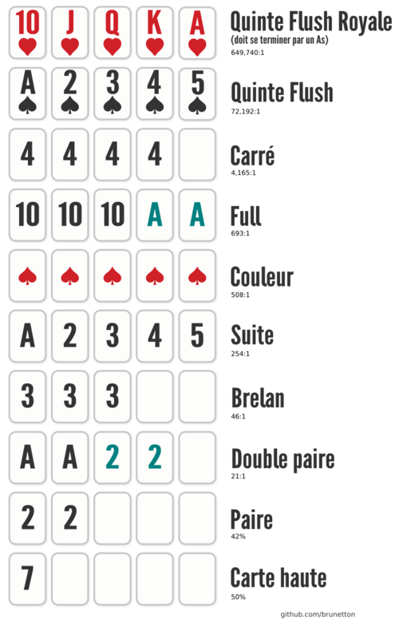

Remporter les jetons misés au centre de la table (le pot) en formant la meilleure combinaison de 5 cartes, ou en misant de façon à faire se coucher tous les autres adversaires.
Chaque main de Texas Hold'em se déroule en plusieurs étapes distinctes :
Les Blindes (Mises obligatoires) : Avant la distribution, les deux joueurs à gauche du donneur (le bouton) doivent miser à l'aveugle. Le premier paie la Petite Blinde et le second la Grosse Blinde (qui vaut généralement le double).
Le Pré-Flop : Chaque joueur reçoit 2 cartes privées face cachée. Le premier tour de mise a lieu, en commençant par le joueur à gauche de la Grosse Blinde.
Le Flop : Le donneur place 3 cartes communes face visible au centre de la table. Deuxième tour de mise.
La River (La Rivière) : Une 5ème et dernière carte commune est retournée. Quatrième et dernier tour de mise.
L'Abattage (Showdown) : S'il reste au moins deux joueurs en jeu après le dernier tour de mise, ils dévoilent leurs cartes. Chaque joueur combine ses 2 cartes privées avec les 5 cartes communes pour former la meilleure main de 5 cartes. La meilleure main remporte le pot.
Lors d'un tour de mise, quand vient son tour, un joueur peut choisir parmi ces actions :
Se coucher (Fold) : Abandonner ses cartes et la main en cours (il ne peut plus gagner le pot).
Checker (Check) : Ne rien miser et passer son tour au joueur suivant. (Possible uniquement si aucune mise n'a été faite avant lui lors de ce tour).
Suivre (Call) : Égaler la mise effectuée par le ou les joueurs précédents pour rester dans la main.
Relancer (Raise) : Augmenter le montant de la mise en cours. Les autres joueurs devront alors suivre, sur-relancer ou se coucher.
Pour déterminer le gagnant à l'abattage, voici le classement officiel des combinaisons au poker (voir le tableau ci-contre) :

Source de l'image: Wikipedia
Le principe : Vous jouez directement pour de l'argent (ou des jetons à valeur fixe).
Flexibilité : Vous pouvez rejoindre la table ou la quitter avec vos gains à tout moment.
Règles : Les blindes sont fixes. Si vous perdez tout, vous pouvez racheter des jetons (recave).
Le principe : Objectif survie. Tout le monde paie le même droit d'entrée (buy-in) pour le même nombre de jetons.
Élimination : Si vous perdez vos jetons, la partie est terminée pour vous.
Règles : Les blindes augmentent régulièrement pour forcer l'action. Les derniers survivants se partagent la cagnotte.
Le principe : Un mini-tournoi hyper-rapide qui se joue à seulement 3 joueurs. Avant de distribuer les cartes, un tirage au sort détermine la cagnotte à gagner.
Le Jackpot : Le multiplicateur peut aller jusqu'à 10 000 fois votre mise de départ. Le multiplicateur est determiné au début de la partie par une roue.
Pour bien jouer, il faut s'adapter à son adversaire. On les classe selon deux critères : le choix de leurs mains (serré ou large) et leur façon de miser (passif ou agressif). Il existe 5 grands types de joueurs au poker :
C'est le joueur sérieux. Il sélectionne très peu de mains (il est "serré"), mais lorsqu'il décide d'en jouer une, il la joue de façon très agressive.
Un joueur très offensif qui joue énormément de mains différentes. Il est très difficile à lire car il peut attaquer avec un éventail de cartes très large.
Le joueur ultra-prudent. Il ne joue quasiment jamais, attendant d'avoir des mains exceptionnelles, et a tendance à jouer de manière très passive (il relance peu).
Le joueur curieux. Il joue beaucoup de mains mais ne relance presque jamais. Il se contente de payer ("call") pour voir les cartes et refuse souvent de se coucher s'il a touché le moindre petit jeu.
Le joueur imprévisible. Il joue pratiquement toutes les mains et passe son temps à miser et relancer dans tous les sens, souvent avec n'importe quelles cartes.